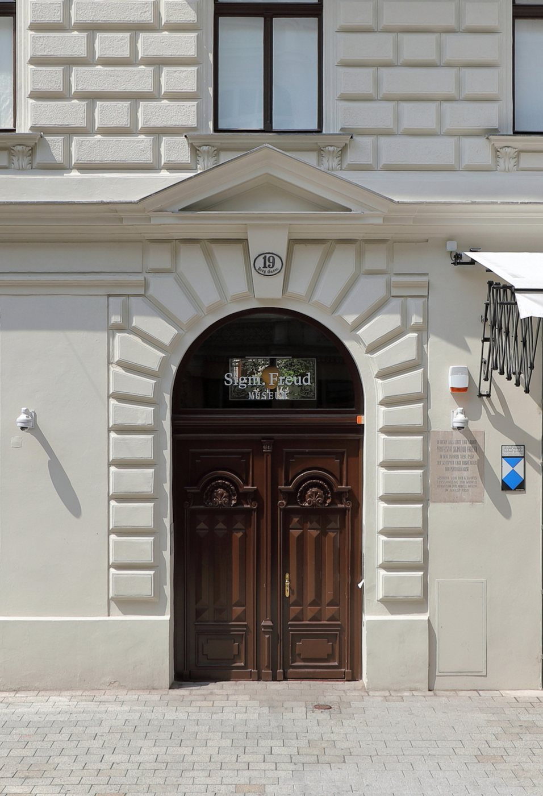

- Dil
- Türkçe · İngilizce · Fransızca
- Saat farkı
- Kışın 2, yazın 1 saat
- İlk görüşme
- Ücretsiz
- Acil
- 112 · Telefonseelsorge 142
Freud’un şehrinde yaşamak
Viyana’nın dokuzuncu bölgesindeki Berggasse 19 numaralı ev, Freud’un 1891’den 1938’e kadar, yani hayatının neredeyse yarım yüzyılı boyunca yaşadığı ve hastalarını dinlediği yerdir. Rüyaların Yorumu burada yazıldı, Dora, Küçük Hans ve Sıçan Adam’ın vakaları burada yürütüldü. Bugün ev, Sigmund Freud Müzesi olarak ziyaretçilerini karşılıyor.

_(cropped2).JPG){kind=link}
Freud’un kendisinin de bir göçmen ailenin çocuğu olduğu çoğu zaman unutulur. 1856’da Moravya’daki küçük Freiberg kasabasında, bugün Çekya’daki Příbor’da doğmuş, ailesi ekonomik sıkıntılar yüzünden önce Leipzig’e, ardından o dört yaşındayken Viyana’ya göç etmişti. Freud zaman zaman bu ilk evin kaybından, çocukluğunun ormanlarından ve çayırlarından söz etti; ilk yıllarına dair bu hasret, psikanalizin çocukluk anılarına verdiği önemin kişisel arka planlarından biri olarak okunmuştur. Hayatının sonunda bir kez daha göç etmek zorunda kaldı. Mart 1938’de Avusturya Nazi Almanyası’na katıldığında seksen bir yaşındaydı; Haziran’da Viyana’dan ayrılmadan önce, oğluna yazdığı bir mektupta kendisini ayakta tutan iki umuttan birini, mektubun Almancasının ortasında birdenbire İngilizceye geçerek dile getirdi: to die in freedom, özgürlük içinde ölmek.
Psikanalizin kurucusu, böylece, hem çocukluğunda hem yaşlılığında gurbeti tanıdı. Bu, psikanalizin yalnızca bir tedavi yöntemi değil, kaybedilmiş bir evi ve yitirilmiş bir dili anlatmanın da bir yolu olduğunu hatırlatır. Avusturya’da yaşayan, Viyana’nın Favoriten ya da Ottakring semtlerinde, Vorarlberg’in tekstil kasabalarında ya da Linz’de, Salzburg’da, Innsbruck’ta hayat kurmuş Türkiyeli aileler için bu şehrin psikanalizle ilişkisi tuhaf bir yakınlık taşır: Freud’un şehrinde yaşayıp kendi hikâyesini Freud’un dilinde değil, kendi ana dilinde anlatabilmek.
Görüşmelerde sık konuşulan konular
Avusturya’da yaşayan analizanların görüşmelere sık getirdiği sorular arasında iki dil arasında büyümek, aile içindeki kuşak çatışmaları, evlilik ve ilişkiler, çalışma hayatındaki tükenmişlik ve dışlanma deneyimleri, uzaktaki anne babaya dair kaygılar ve yas, Türkiye’ye dönme ya da kalma kararının belirsizliği sayılabilir.
Pratik bilgiler
Saat farkı. Avusturya kışın UTC+1, yazın UTC+2 saatini kullanır. Türkiye yıl boyunca UTC+3’tür; kışın iki, yazın bir saat ileridedir.
Sigorta. Avusturya’da psikoterapi, 1990 tarihli Psikoterapi Yasası’yla düzenlenmiştir ve sağlık sigortası, Avusturya’da kayıtlı psikoterapistlerle yapılan görüşmelerin bir kısmını belirli koşullarda karşılar. Avusturya dışında çalışan bir uzmanla yapılan bu görüşmeler bu kapsamda değildir.
Dil. Görüşmeler Türkçe, İngilizce ya da Fransızca yapılabilir. Almanca görüşme sunmuyorum.
Acil durumlarda
Bu görüşmeler bir acil durum hizmeti değildir. Kendinize ya da bir başkasına zarar verme tehlikesi varsa hemen 112’yi ya da ambulans için 144’ü arayın. Telefonseelsorge’a 142’den günün her saati, ücretsiz ulaşabilirsiniz; çocuklar ve gençler için Rat auf Draht 147’den hizmet verir.
Sık sorulan sorular
Avusturya’daki sağlık sigortası bu görüşmeleri karşılar mı?
Hayır. Avusturya’daki sağlık sigortası yalnızca Avusturya’da kayıtlı psikoterapistlerle yapılan görüşmelere belirli koşullarda katkı verir. Bu görüşmeler bu sistemin dışındadır.
Görüşmeler hangi dilde yapılıyor?
Türkçe, İngilizce ya da Fransızca. Hangi dilde konuşmak istediğinizi siz seçersiniz ve görüşme içinde diller arasında gidip gelebilirsiniz.
İlk görüşme ücretsizdir. Bir gün ve saat belirlemek ya da sorularınızı sormak için bana yazabilirsiniz.
İletişim formu